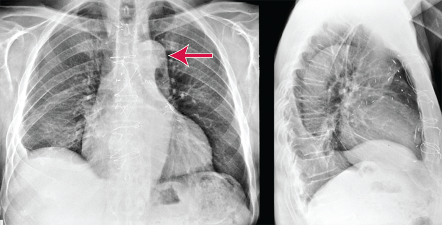
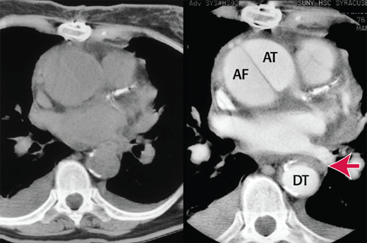
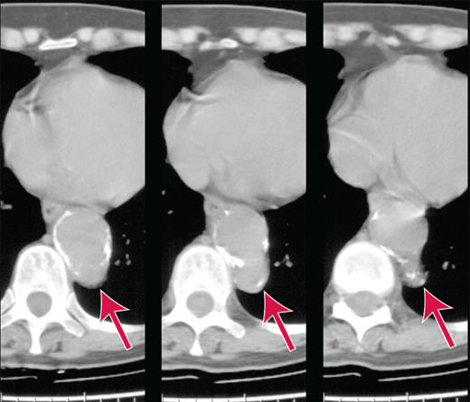

Acute aortic syndromes encompass a number of life-threatening aortic emergencies. These include aortic dissection, penetrating atherosclerotic ulcer, intramural hematoma, and aortic aneurysmal leakage and ruptured abdominal aortic aneurysm (see Aneurysmal Disease).
Acute aortic syndromes are uncommon but frequently fatal. The incidence ranges from 2.9 to 4.7 cases per 100,000 people per year.1,2 The 1-, 5-, and 10-year actuarial survival rates are 92%, 77%, and 57%, respectively, for operative patients.3 Twenty-two percent of cases are undiagnosed prior to death.3 The most common cardiovascular complication of Marfan’s syndrome is aortic root disease and type A dissection (ascending aorta). The identification of gene mutations associated with Marfan’s syndrome, such as TGFBR2 and FBN1, combined with regular follow-up can reduce fatal outcomes.4
Acute aortic syndromes occur in the setting of chronic hypertension and other factors that lead to degeneration of the media of the aortic wall. Bicuspid aortic valve, Marfan’s syndrome, Ehlers-Danlos syndrome, and familial history of aortic dissection all predispose to aortic syndromes. Chronic cocaine or amphetamine use accelerates atherosclerosis and increases the risk for dissection. Prior cardiac surgery is also a risk factor for aortic dissection. All mechanisms involve weakening of the medial layer and increasing intimal wall stress. Response to stress may include aortic dilation, aneurysm formation, development of a penetrating ulcer, intramural hemorrhage, aortic dissection, and aortic rupture.
Aortic dissection occurs after a violation of the intima allows blood to enter the media and dissect between the intimal and adventitial layers. The two most common intimal tear sites are the sinotubular junction at the start of the acending aorta (50% to 65%) and just beyond the left subclavian artery (20% to 30%) at the junction between the acending and descending aorta.3 The dissecting column of blood forms a false lumen and may extend distally (most common), proximally, or in both directions. Blood may dissect and reenter the intima, reestablishing blood flow, and this may falsely suggest to the clinician a spontaneous resolution of the patient’s presenting complaint. Alternatively, the blood may dissect through the adventitia, which nearly always proves rapidly fatal.
Aortic dissection has a bimodal age distribution.3 The first peak involves younger patients with specific predisposing conditions such as connective tissue disorders. The second peak includes those aged >50 years with chronic hypertension and/or ischemic heart disease.5 Prior aortic dissection is a risk factor for recurrent dissection.6
Aortic dissections are classified using two separate systems, the Stanford and DeBakey systems. The Stanford classification considers any involvement of the ascending aorta a type A dissection. Stanford type B dissections are restricted to only the descending aorta. DeBakey type 1 dissections simultaneously involve the ascending aorta, the arch, and the descending aorta. DeBakey type 2 dissections involve only the ascending aorta, and type 3 involve only the descending aorta.
An aortic intramural hematoma results from infarction of the aortic media, usually from injury to the vasa vasorum. An intramural hematoma may resolve spontaneously or may lead to dissection.7 Penetrating atherosclerotic ulcer can lead to intramural hematoma, aortic dissection, or perforation of the aorta. There appear to be sex-related differences between patients with aortic dissections and intramural hematoma.8 Intramural hematoma affects female individuals in approximately 62% of cases.9 Aortic dissections in women appear to have a higher age of onset, frequent inpatient complications, and a higher in-hospital mortality.8,9
The site of initial intimal disruption often predicts the initial symptoms.10 Symptoms may change as the dissection extends along the aorta or involves other arteries or organs. Classically, dissection presents with abrupt5 and severe pain5 in the chest that radiates to an area between the scapulae and may be accompanied by a feeling of impending doom. In a case series of 464 dissections,3 60% of patients had anterior chest pain (more common in Stanford type A); abdominal pain was more common in Stanford type B. Most patients describe the pain as severe or the worst they have ever experienced.3 Sixty-four percent describe sharp pain, and 50% describe tearing or ripping pain.5 A significant number of patients present without chest pain, as much as 40%, as reported in a study from Asia.11 Syncope occurs almost 10% of the time,5 which is more common in Stanford type A dissections. Twenty-two percent of dissections occur in patients with prior cardiac surgery.6
Dissection in or near a carotid artery may present as a classic stroke, and 20% of patients with type A dissection display neurologic findings, which predicts a poorer prognosis.12,13 Interruption of blood supply to the spinal cord may lead to paraplegia. Further distal dissection may present as back, flank, or abdominal pain. A proximal dissection to the aortic root may lead to cardiac tamponade and is generally fatal.
For most patients with aortic dissection, examination findings are relatively normal. An aortic insufficiency murmur may occur (32%),7 and a pulse deficit in radial arteries or femoral arteries may be found (15%).7,14 A blood pressure difference >20 mm Hg between arms is independently associated with aortic dissection15; however, 19% of ED patients without dissection also have this clinical finding.16 Hypertenstion is common (49%), but hypotension occurs in 18% to 25% of patients,3 which makes the diagnosis more likely and worsens prognosis.7,14 Aneurysmal dilation of the aorta may compress regional structures such as the esophagus, the recurrent laryngeal nerve, or the superior cervical sympathetic ganglion, causing dysphagia, hoarseness, or Horner’s syndrome.
Using retrospective data from the International Registry of Acute Aortic Dissection, three clinical categories (underlying condition, pain quality and location, and examination findings) were parsed into 12 features17,18 associated with acute aortic dissection (Table 1). The clinical features listed in Table 1 form the basis of the Aortic Dissetion Detection Risk Score; 1 point is given for each category with a feature present by history or physical exam, and scores range from 0 to 3. Two studies published in 2018 support the strong association of the features listed in Table 1 with acute aortic dissection in symptomatic patients.5,14
| Category 1: Underlying Condition | Category 2: Pain in Chest, Back, or Abdomen | Category 3: Abnormal Examination |
|---|---|---|
Marfan’s syndrome Family history of aortic disease Aortic valvular disease Recent aortic manipulation Thoracic aortic aneurysm |
Abrupt onset Severe in intensity Ripping or tearing |
Pulse amplitude difference or systolic blood pressure differential in extremities Focal neurologic deficit and chest, back, or abdominal pain New murmur of aortic insufficiency and chest, back, or abdominal pain Shock or hypotension |
The large differential diagnosis for the complaint of chest pain plus the many end-organ ischemic manifestations associated with aortic dissections make the diagnosis challenging. The most important differential diagnoses are listed below.
Ischemic manifestations may change with time (as the dissection progresses), and this may distract the physician from making the correct diagnosis. Rupture of the dissection into the true aortic lumen may cause a cessation of symptoms, and the correct diagnosis may then be inappropriately dismissed. History, physical examination, and chest radiography can suggest the diagnosis, but only if one is alert to aortic dissection as one of the diagnostic possibilities in a patient with acute chest, back, or abdominal pain; syncope; or acute focal neurologic signs. Factors associated with misdiagnosis include walk-in mode of admission, normal mediastinal width/aortic contour on chest radiograph, equal extremity pulse amplitudes, and nonspecific symptoms.19-21
It may be difficult to differentiate aortic dissection from acute coronary syndromes on ECG, because both conditions are associated with ECG changes and dissection may limit or obstruct coronary artery blood flow. Abnormal ECG findings include new Q waves or ST-segment elevation in 3% to 4%, ST-segment depression in 15% to 22%, and nonspecific ST- and T-wave changes in 41% to 62%.3,7,22 The ECG is normal in only 19% to 31% of patients.3,22
Several potential biomarkers have been investigated for their utility to identify or exclude aortic dissection.23 D-Dimer is the marker most thoroughly investigated. A meta-analysis of five studies involving 473 subjects with acute aortic dissection and 1084 without acute aortic dissection found a sensitivity of 98% (95% confidence interval, 96% to 99%) and negative likelihood ratio of 0.05 (95% confidence interval, 0.03 to 0.09) using a D-dimer cut point of 500 nanograms/mL (1620 nmol/L).24 The specificity was low at 41% (95% confidence interval, 39% to 44%). Guidelines do not endorse the use of D-dimer as the sole means of excluding aortic dissection,14 and several authors have cautioned against this practice.25-27 The false-negative rate using D-dimer is as high as 18%25 and may be associated with a high platelet count.26 Despite extensive study, there is no clinical decision rule that can be reliably used to identify very-low-risk patients for whom no further diagnostic workup is needed.28 The Diagnostic Accuracy of the Aortic Dissection Detection Risk Score Plus D-Dimer for Acute Aortic Syndromes study of 1850 patients clinically suspected of having aortic dissection found that patients with none or only one of the features listed in Table 1 and a negative D-dimer (<500 nanograms/mL) had a low rate of aortic dissection (0.3%).29 The Diagnostic Accuracy of the Aortic Dissection Detection Risk Score Plus D-Dimer for Acute Aortic Syndromes study needs to be externally validated.
A plain chest radiograph may provide important clues for the diagnosis. However, 12% to 37% of patients have no abnormality, and this study should not be used to exclude dissection.3 The most common radiographic abnormality is a widened mediastinum or abnormal aortic contour. Other possible findings include pleural effusion, displacement of aortic intimal calcification, and deviation of the trachea, mainstream bronchi, or esophagus (Figure 1).
CT is the imaging modality of choice for diagnosis of dissection.17,23,30 CT can reliably identify a false lumen (Figure 2) and can provide additional details such as the anatomy of the dissection, the location of the dissection flap, extension of the flap into great vessels (Figure 3), signs of aortic rupture, and signs of end-organ damage. CT protocols should be both with and without IV contrast. Individual physicians’ practice varies; the utilization of CT imaging of patients for presenting with possible dissection varies between 0.6% and 12% of patients with chest, back, or abdominal pain.31 Invasive catheter angiography is rarely necessary.
CT may also diagnose intramural hematoma and penetrating atherosclerotic ulcer.30 Penetrating atherosclerotic ulcer can be difficult to distinguish from large atheromatous plaques (Figure 4). CT diagnosis of penetrating atherosclerotic ulcer depends on extension of the ulcer past the intima. Ulcers often have overhanging edges and focal outpouchings of the aorta itself. Intramural hematoma is often identified by a high-signal mass in the aorta on CT (Figure 5). This often appears as a crescent and is best seen on noncontrasted images.
In experienced hands, transesophageal echocardiography may be as sensitive and specific as CT. The procedure generally must be performed under moderate sedation or even general anesthesia. Known esophageal disease is a relative contraindication. Sound transmission is disrupted by air in the trachea or left bronchia, which may make evaluation of the ascending aorta difficult. The accuracy and precision of transesophageal echocardiography are highly operator dependent. MRI has been used to evaluate stable patients with suspected aortic disease.30
Coronary/pulmonary/aortic CT angiography, or the “triple rule-out,” which is used to differentiate acute coronary artery disease, pulmonary embolism, and acute aortic dissection,32,33 has not been shown to improve diagnostic yield, reduce clinical events, or diminish downstream resource use.34 Therefore, in its current form, it cannot be recommended.
While aortic dissections may cause hypotension that requires fluid or blood product resuscitation, suspected aortic dissection commonly requires antihypertensive treatment. Initial treatment should be a negative inotropic agent in order to lower blood pressure without increasing the shear force on the intimal flap of the aorta. β-Blockade is ideal, and short-acting β-blockers such as esmolol or labetalol are preferred over long-acting β-blockers. The ideal target blood pressure is undefined by controlled trials and must be tailored to each patient (see Systemic Hypertension and Pulmonary Hypertension). However, a systolic pressure of 120 to 130 mm Hg is a reasonable starting point; some guidelines suggest a goal of 100 to 120 mm Hg (in the absence of aortic regurgitation).17,35
Esmolol may be given as an initial bolus of 0.1 to 0.5 milligram/kg IV over 1 minute followed by an infusion of 0.025 to 0.2 milligram/kg/min. Labetalol (a β-blocker with limited α-blocking characteristics in a 7:1 ratio) also may be used at an initial dose of 10 to 20 milligrams IV with repeat doses of 20 to 40 milligrams every 10 minutes to desired effect or a maximum dose of 300 milligrams. β-Blocker use has been associated with improved survival in the International Registry of Acute Aortic Dissection database.36
Vasodilators may be added for further antihypertensive treatment after successful administration of esmolol or labetelol. IV nicardipine, clevidipine, nitroglycerin, or nitroprusside are options.37
Rapid referral to a vascular surgeon is mandatory. Emergency open repair remains the treatment of choice for most patients; however, endovascular repair is being used more frequently.38-43
Patients with acute aortic syndromes are likely to require admission to an intensive care unit for hemodynamic therapy and careful monitoring. Acute intermural hematomas and penetrating ulcers have an unclear clinical course and natural history. Therefore, the management of patients with these disorders remains controversial.44 Clearly, no patient with an acute aortic syndrome should be discharged without speciality consultation.
Aortic dissection in pregnancy is rare and usually occurs in the third trimester and postpartum period. Risk factors are bicuspid aortic valve, connective tissue disorders, hypertension, and a family history. Pregnancy increases the risk of dissection in patients with Marfan’s syndrome, complicating 4.4% of pregnancies in women with the syndrome.45 Simultaneous consultation with obstetrics and cardiovascular surgery is needed if the diagnosis is considered. See Comorbid Disorders in Pregnancy for further discussion.